행사
지난 행사 사진
옛 교실 홈페이지(2015–2021년)에 실렸던 교실 행사 사진을 연도별로 모았습니다. Catholic Surgical Symposium과 전공의 FAIR 사진은 각 탭에서 볼 수 있습니다.
2021년 행사
2021 CIBEC Week2021 대한외과학회 춘계학술대회 전공의 술기 경연대회박일영 교수 정년퇴임식·특별강연제4회 전공의를 위한 CMC Human Cadaveric Surgical Workshop
2021 CIBEC Week
가톨릭국제술기교육센터에서 한 주 동안 열린 술기 교육 주간입니다. 교수와 전공의가 함께 수술 술기를 익혔습니다.
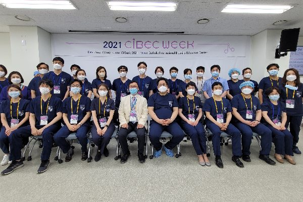
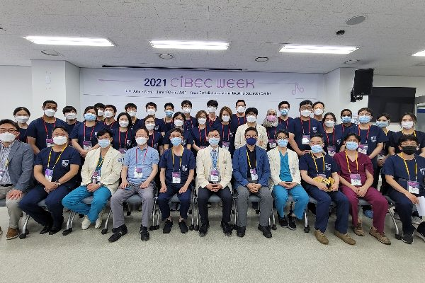
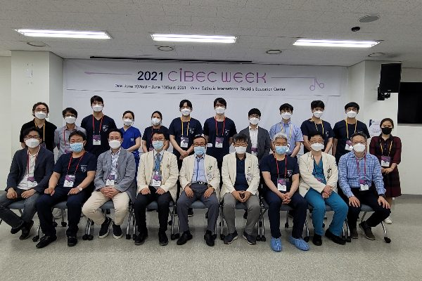
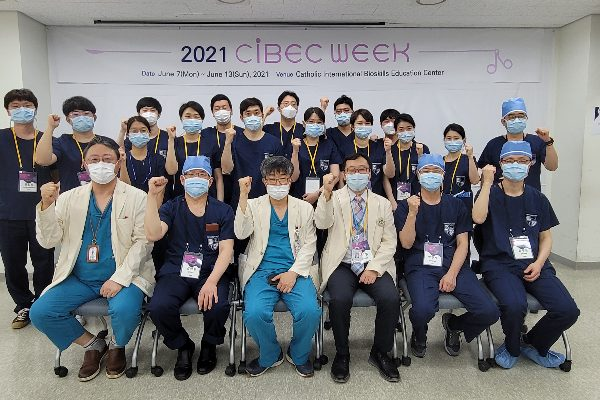
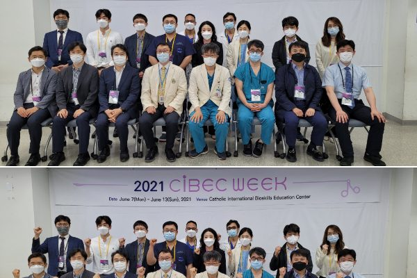
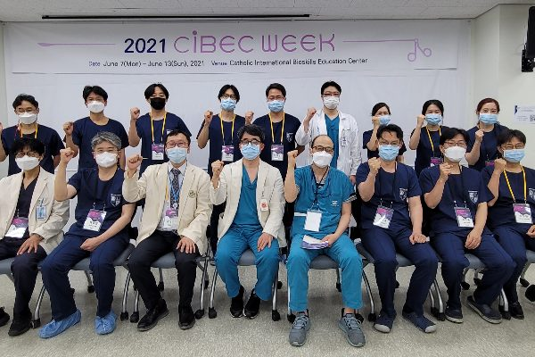
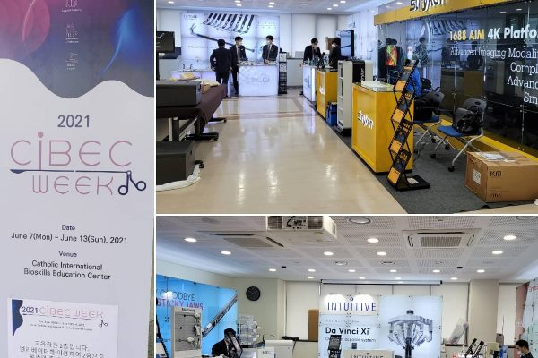
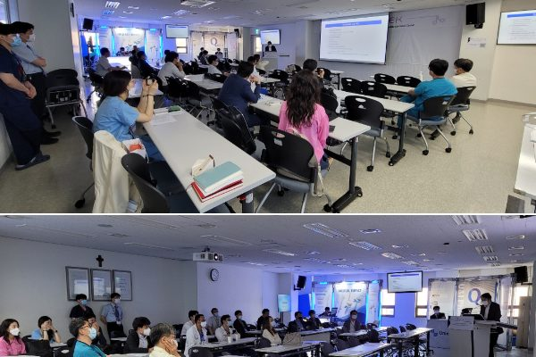
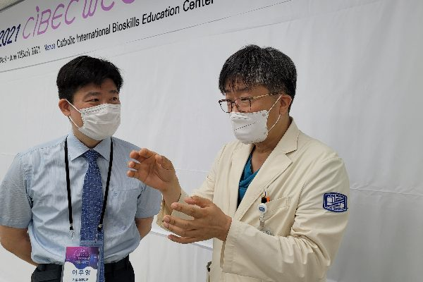
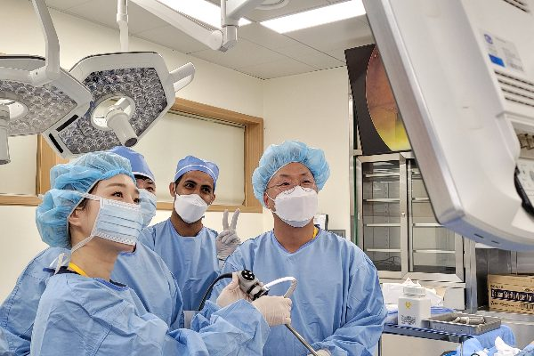
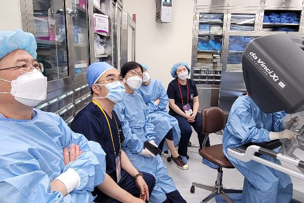
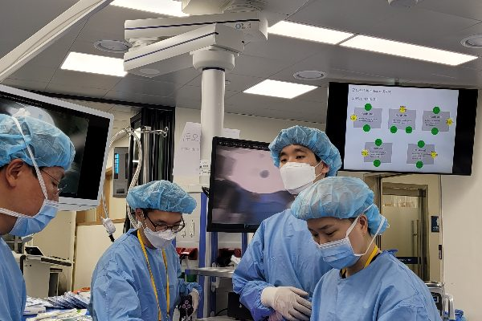
2021 대한외과학회 춘계학술대회 전공의 술기 경연대회
전공의 술기 경연대회에서 4년차 김희주·박준선 전공의가 대상을, 김창환·임경무 전공의와 장은주·김영민 전공의가 장려상을 받았습니다.
박일영 교수 정년퇴임식·특별강연
부천성모병원 박일영 교수의 정년퇴임을 기념해 특별강연 '가톨릭외과와 함께한 40년'과 퇴임식이 열렸습니다.
제4회 전공의를 위한 CMC Human Cadaveric Surgical Workshop
전공의들이 가톨릭국제술기교육센터에서 주요 수술 술기를 실습했습니다.
2019년 행사
2019년 신년하례식외과 학생인턴 오리엔테이션전공의 간담회가톨릭국제술기교육센터 개소식외과발전전략 대토론회Fresh Cadaver Workshop2019년 박사 학위수여식이성 교수 정년퇴임식2019 신입 전공의 입국식·오리엔테이션진급 교수 축하 모임외과학교실·동문 등반대회5월 월례집담회2019 대한외과학회 춘계학술대회 수상전공의를 위한 Human Cadaveric Surgical Workshop상반기 전공의 간담회제8회 외과술기워크숍2019 동문 골프대회9월 월례집담회가톨릭대학교 의과대학 제17차 총동문 등반대회제71회 대한외과학회 추계학술대회 전공의 프로그램 수상ASUS 2019 Best Oral Presentation 수상외과학교실 동문회 홈커밍 송년의 밤
2019년 신년하례식
명예교수와 교실원, 동문이 함께 새해 인사를 나누었습니다.
외과 학생인턴 오리엔테이션
오세정 주임교수의 환영사와 문인성 교수의 강의로 학생인턴 오리엔테이션을 했습니다.
전공의 간담회
전공의들과 수련 생활에 대해 이야기를 나누고 6층 하늘공원에서 기념 사진을 찍었습니다.
가톨릭국제술기교육센터 개소식
가톨릭국제술기교육센터 개소식과 축복식, 현판식이 열렸습니다.

외과발전전략 대토론회
의료원과 8개 병원 보직자, 외과 교수 50여 명이 참석해 외과 발전 방안을 논의했습니다.

Fresh Cadaver Workshop
가톨릭국제술기교육센터 개소를 기념해 열린 워크숍입니다.
2019년 박사 학위수여식
성빈센트병원 임승택 교수가 박사 학위를 받았습니다.
이성 교수 정년퇴임식
30년 동안 환자 진료와 후학 교육에 힘써 온 이성 교수의 정년퇴임을 축하했습니다.
2019 신입 전공의 입국식·오리엔테이션
새로 들어온 1년차 전공의들을 맞았습니다.
진급 교수 축하 모임
2019년에 진급한 교수들을 함께 축하했습니다.
외과학교실·동문 등반대회
교실원과 동문이 함께 청계산에 올랐습니다.
5월 월례집담회
새로 문을 연 은평성모병원에서 월례집담회를 열었습니다.
2019 대한외과학회 춘계학술대회 수상
전공의를 위한 Human Cadaveric Surgical Workshop
전공의를 위한 술기 워크숍입니다.
상반기 전공의 간담회
제8회 외과술기워크숍
2019 동문 골프대회
9월 월례집담회
가톨릭대학교 의과대학 제17차 총동문 등반대회
제71회 대한외과학회 추계학술대회 전공의 프로그램 수상
Chief Resident Forum에서 박준선·이유정 전공의와 문기윤·유현주 전공의가 장려상을, 전공의 술기 경연대회에서 문지연·문기윤 전공의가 대상, 최윤영·정용기 전공의가 장려상을 받았습니다.
ASUS 2019 Best Oral Presentation 수상
장은주 전공의(2년차)가 SICU 초음파 교육 프로그램 연구로 Best Oral Presentation을 받았습니다.
외과학교실 동문회 홈커밍 송년의 밤
송년의 밤에서 우수 전공의 시상이 있었습니다. 최우수 전공의상은 문지연 전공의, 우수 전공의상은 유현주·문기윤·김희주·김영민 전공의가 받았습니다.
2018년 행사
2018년 신년하례식2017년 하반기 전공의 간담회2018 퇴국식2018년 봄 석·박사 학위수여식2018 신입 전공의 오리엔테이션주임교수 이·취임식
2018년 신년하례식
교실원 80여 명이 함께 새해 인사와 떡국을 나누었습니다.
2017년 하반기 전공의 간담회
2018 퇴국식
수련을 마치고 전문의가 된 4년차 전공의 3명의 퇴국을 축하했습니다. 동문회에서 축하패와 선물을 전했습니다.
2018년 봄 석·박사 학위수여식
2018 신입 전공의 오리엔테이션
신입 전공의 13명을 맞았습니다. 환영사와 교실 소개, 4년 뒤 퇴국할 때 열어 볼 편지 쓰기가 있었습니다.
주임교수 이·취임식
제12대 박조현 주임교수와 제13대 오세정 주임교수의 이·취임식이 열렸습니다.

2017년 행사
2017년 신년하례식2017 퇴국식김준기 교수 정년퇴임식2016학년도 전기 석·박사 학위수여식2017 상반기 교실 워크숍2017 신입 전공의 오리엔테이션학과장 임명식2017 외과 전공의 입국식제8회 개원의, 전공의 및 임상강사를 위한 심포지엄2017 교실 등반대회2017 대한외과학회 춘계학술대회 전공의 술기 경연대회외과학교실 출범 60주년 기념식외과중앙연구소 개소기념 세미나·현판식·축복식
2017년 신년하례식
2017 퇴국식
4년차 전공의 10명의 퇴국을 축하했습니다.
김준기 교수 정년퇴임식
33년 동안 외과학교실에서 진료와 교육, 연구에 힘쓴 김준기 교수의 정년퇴임식입니다.
2016학년도 전기 석·박사 학위수여식
2017 상반기 교실 워크숍
주제: 새로운 교실 발전을 위한 제언
2017 신입 전공의 오리엔테이션
신입 전공의 14명을 맞았습니다.
학과장 임명식
2017년 3월부터 1년 임기를 맡을 학과장들에게 임명장을 드렸습니다.
2017 외과 전공의 입국식
제8회 개원의, 전공의 및 임상강사를 위한 심포지엄
2017 교실 등반대회
2017 대한외과학회 춘계학술대회 전공의 술기 경연대회
전국 24개 팀이 참가한 대회에서 박한얼·이태윤 전공의(4년차)가 1위로 2017년 전공의 술기왕에 뽑혔고, 윤승훈·이철승 전공의(3년차)가 3위에 올랐습니다.
외과학교실 출범 60주년 기념식
1957년 4월 출범한 외과학교실의 60주년을 교실원과 동문이 함께 기념했습니다.
외과중앙연구소 개소기념 세미나·현판식·축복식
2016년 행사
2016년 신년하례식1월 월례집담회 초청강연2016 학생 인턴십 오리엔테이션2016 사은회2016 전임의 수료식2016 신입 전공의 오리엔테이션2016 입국식제2회 Women in Surgery Symposium
2016년 신년하례식
1월 월례집담회 초청강연
삼성서울병원 김성주 교수가 '연구를 바라보는 외과의사'를 주제로 강연했습니다.
2016 학생 인턴십 오리엔테이션
2016 사은회
4년 수련을 마치는 전공의 7명을 축하했습니다.
2016 전임의 수료식
임상과장·학과장 연석회의에서 임상강사 18명에게 수료증을 드렸습니다.
2016 신입 전공의 오리엔테이션
2016 입국식
신입 1년차 전공의 14명을 맞았습니다.
제2회 Women in Surgery Symposium
외과 여의사회 활성화 방안을 함께 나눈 심포지엄으로, 80여 명이 참석했습니다.
2015년 행사
제1회 가톨릭의대 외과동문 등반대회4월 월례집담회이용각 교수 대한의학회 명예의 전당 헌정 기념식제4회 전국 의대생을 위한 Surgical Skill Weekend2015 제1차 전공의 간담회2014학년도 후기 학위수여식제1회 외과동문회장배 골프대회Women in Surgery SymposiumACS(미국외과학회) 참관2015 하반기 교수 워크숍외과동문회 송년회
제1회 가톨릭의대 외과동문 등반대회
4월 월례집담회
외과학교실 로고를 만든 상지대 하용훈 교수의 로고 설명과 감사패 전달이 있었습니다.
이용각 교수 대한의학회 명예의 전당 헌정 기념식
이용각 교수의 대한의학회 명예의 전당 헌정을 기념하는 행사가 열렸습니다. 명예교수들과 교실원, 동문이 함께했습니다.


제4회 전국 의대생을 위한 Surgical Skill Weekend
전국 20여 개 의과대학 학생 46명이 모의환자 봉합술, 로봇·복강경 시뮬레이터, 수술실 체험에 참여했습니다.

2015 제1차 전공의 간담회
새 교육과정을 설명하고 전공의 의견을 들었습니다.


2014학년도 후기 학위수여식

제1회 외과동문회장배 골프대회
13팀 52명이 참가했습니다.


Women in Surgery Symposium
외과 여의사회 발족을 기념해 열린 심포지엄입니다.


ACS(미국외과학회) 참관
전공의 8명과 교수들이 ACS 학술대회에 참관했습니다.


2015 하반기 교수 워크숍
8개 병원 과장과 수련교육위원들이 전공의 교육에 대해 토론했습니다.


외과동문회 송년회
'우리는 외과다!'를 주제로 교실원과 동문이 한 해를 마무리했습니다.